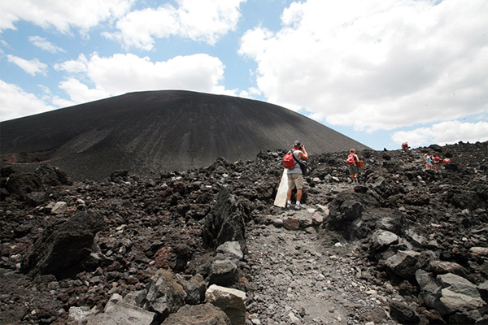
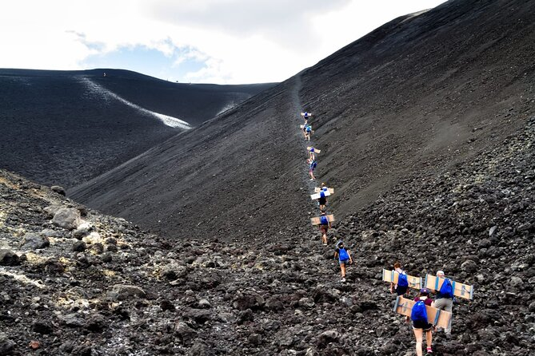

When we started walking, the air smelled of dust, but mostly of sulfur. The sand on the volcano began to feel hot under our feet, and as we started to climb, we had to be careful with the rocks because they were slippery; falling could mean certain death, or just broken ribs if you were lucky. In fact, something happened that did surprise me: I slipped and ended up on the edge of a cliff, but I managed to get up before something worse happened. My sister and I walked ahead with the instructor, turning back every few steps to make sure everything was okay, mostly to check if my mother was fine. My older brother and my other sister stayed with her just in case something happened.
 